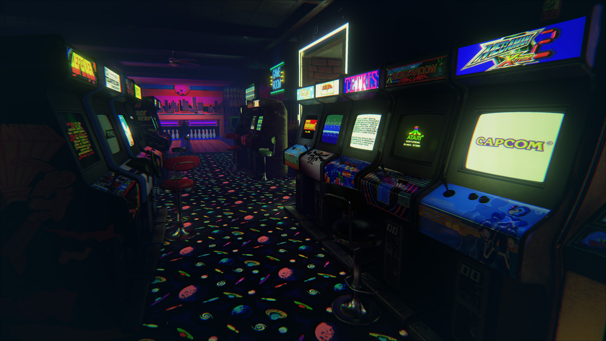
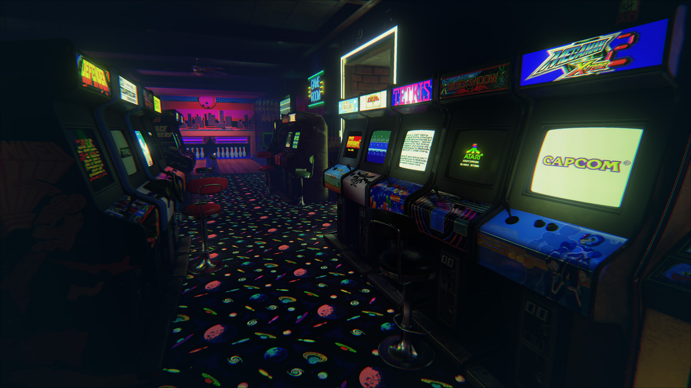

Jeux d'arcade
LES JEUX SUR BORNE LES FLIPPERS LES JEUX DE COURSE LES JEUX DE RACHAT
|
De nombreux jeux vidéo sont disponibles sur les arcades. Pour pouvoir y jouer, les utilisateurs doivent utiliser des pièces de monnaie ou des jetons afin que le jeu débute. De façon générale, le jeu se termine après un temps déterminé ou si votre personnage meurt ou échoue sa tâche, selon la nature du jeu. |
Le flipper est aussi connu sous le nom de pinball. Il s'agit d'un plateau de jeu recouvert d'une vitre où une ou plusieurs billes métalliques doivent être dirigées vers des endroits stratégiques afin de marquer des points. Le joueur doit utiliser les flippers situés au bas de l'arcade afin de lancer les billes. Il existe deux buts principaux à ce type de jeu. Le premier consiste à réaliser le score le plus élevé alors que le deuxième consiste à jouer le plus longtemps possible avant que la ou les billes ne sortent du plateau de jeu. |
Ce type d'arcade est en fait une boîte vitrée dans laquelle se trouvent des jouets ou des peluches. Le joueur doit utiliser une pince mécanique qu'il commande depuis l'extérieur afin d'attraper une peluche ou un jouet et de le faire tomber dans la chute où il pourra être récupéré. Le joueur n'a que quelques secondes pour manier et placer adéquatement la pince avant que celle-ci ne descende et se referme sur ce qui se trouve sous elle. Si rien n'est récupéré par la pince, le joueur devra débourser à nouveau pour retenter sa chance. |
Les jeux de rachat sont des arcades qui demandent aux joueurs une certaine adresse. Lorsqu'un joueur réussit bien à l'un de ces jeux, il peut remporter des tickets qui peuvent ensuite être échangés pour des cadeaux dans l'établissement où il se trouve. Les jeux d'arcade de type rachat sont nombreux. Pour n'en citer que quelques-uns, il existe le mini-bowling, le skee ball, le jeu de la taupe, le pousse-pièce et plusieurs autres. |
|---|

Les jeux d'arcade marquent les débuts de l'industrie vidéoludique. Au fil du temps, le terme "jeu d'arcade" a évolué pour englober deux significations distinctes :
23h30 j'arrive pas à mettre d'espaces
D'une part, il désigne le jeu vidéo classique installé dans une borne d'arcade.
D'autre part, ce style de jeu est défini par des mécanismes simples et rapides, avec des objectifs clairs et une compétition intense entre les joueurs. Il est présent sur différentes plateformes : bornes d'arcade, consoles, appareils mobiles et ordinateurs.
Contrairement aux jeux vidéo réalistes et complexes, les jeux d'arcade se veulent accessibles à tous, indépendamment de l'âge, du niveau de compétence ou des préférences. Ils s'adaptent aussi bien aux novices qu'aux joueurs chevronnés, à tous les âges. Un univers ludique polyvalent qui convient à chacun.
 
